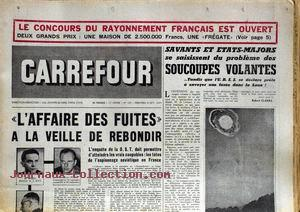

La une du n° 525 de Carrefour ce jour-là, titrant Savants et Etats-Majors se saisissent du
problème des soucoupes volantes... tandis que l'U.R.S.S. se déclare pr ête à envoyer une fusée dans la Lune !

Tombée de la nuit A Mouchamps, M. et MmeLaroche, de Paris, voient une sphère incandescente atterrir près de Chantonnay (Vendée)
AFP, 7 octobre 1954 < Catalogue de Vallée, n° 200, LDLN, novembre 1969 < Garreau, Charles & Lavier, Raymond: Face
aux
Extra-terrestres, Jean-Pierre Delarge, 1975, p. 73 < Choloux, Jérôme: "2.
La vague de 1954" in "Les OVNIs en Vendée", Les Mystères de Vendée, 2007.
A La Ferrière (Vendée), 3 élèves de l'école publique
et quelques habitants du bourg affirment avoir observés 1 soucoupe volante se dirigeant vers l'Ouest, à vitesse
réduite. Leur attention avait été attirée dans le ciel par le passage d"un avion à réaction. Peu après, apparut un
engin ovale qui se déplaçait sans bruit. La masse blanchâtre avait un reflet bleu à l"avant et une sorte de feu
rouge à l"arrière. Les témoins affirment qu"il ne peut y avoir aucune confusion entre cet engin et un avion à
réaction"Un mystérieux engin", Article de l'époque < Choloux, Jérôme: "2.
La vague de 1954" in "Les OVNIs en Vendée", Les Mystères de Vendée, 2007.
A La Fère (France), près des baraquements militaires,
des soldats voient un étrange objet sur le sol à environ 300 m d'eux. Lorsque l'un d'eux s'approche de l'objet, qui
avait la forme d'une torpille d'environ 80 cm de hauteur, il se trouve paralysé.
A Villiers-le-lac (France), MmesSalabrino et sa fille voient une lueur blanchâtre à l'ouest, dans le ciel. Cela semble se
diriger lentement vers le sol et est aperçu, par la suite, entre la gare et le pont se trouvant à 100 m de leurs
maison. Quand l'objet bouge, une lumière très vive est visible sous sa masse sombre. Il en jaillit un flot
d'étincelles, il s'élève, reste un survol un moment puis s'envole au loin rapidement.
A Cozes, alors qu'elle rentre chez elle à vélo, une dame
aperçoit, dans un champ bordant la route Bordeaux-Royan, une
lueur orange, puis verte, provenant d'un objet ayant la forme d'une "tortue surmontée d'une coupole". Alors qu'elle
observe cette curieuse apparition, la lumière de l'engin s'éteint. Elle voit aussitôt en sortir 2 formes humaines,
dont l'une est "armée d'une tige". La forme humaine en question semble chercher quelque chose. Soudain, une violente
lumière jaillit à nouveau de l'engin : la dame voit alors 2 petits cyclopes sans nez, à la face plate mais marquée
de 2 trous au-dessus de leur bouche. Effrayé, elle met à crier, et l'engin disparaît avec un faible bourdonnement
"Deux
petits cyclopes dans le nez", Sud Ouest, 16 juillet 2009.